这是一个 RC4 500pt 的逆向题目，下面介绍两种不同的解题方法。
方法一：Patch + IDA 动调
（1）查壳
首先查壳，确定程序无壳或已知壳类型。
（2）分析 main 函数
main 函数伪代码很大，不方便直接看。定位 sub_ 开头的函数，按 Tab 键切换到汇编视图，分析汇编代码。
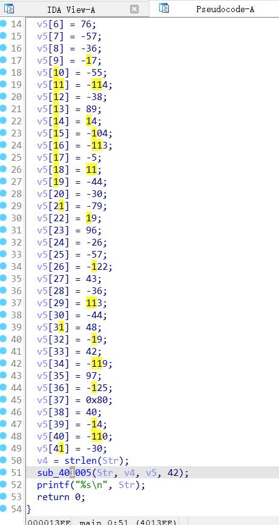
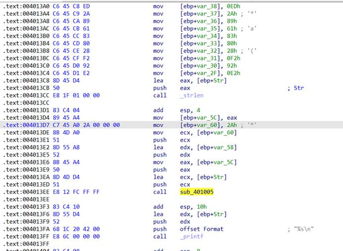
（3）准备 IDA 动调
下断点 F2，断点位置如图所示。设置好后回到汇编窗口。
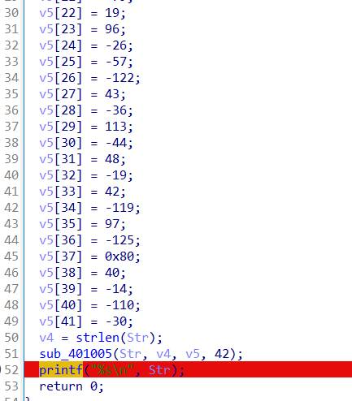
（4）根据对汇编代码的分析
根据对汇编代码的分析，需要修改数据。找到这个位置：
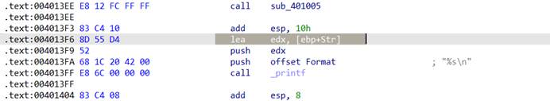
修改：
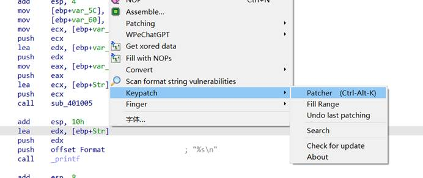
这一行：
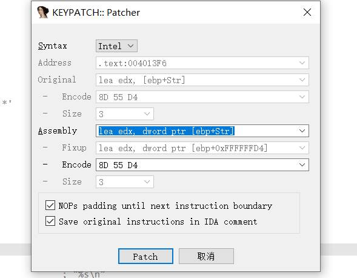
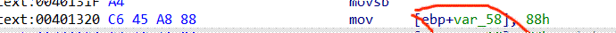
修改它的地址：
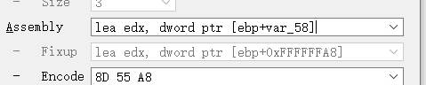
改成这样，patch 一下，成这样：
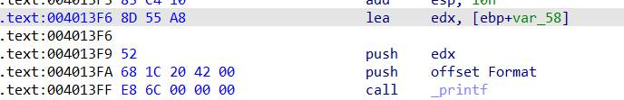
再保存一下，点这个：
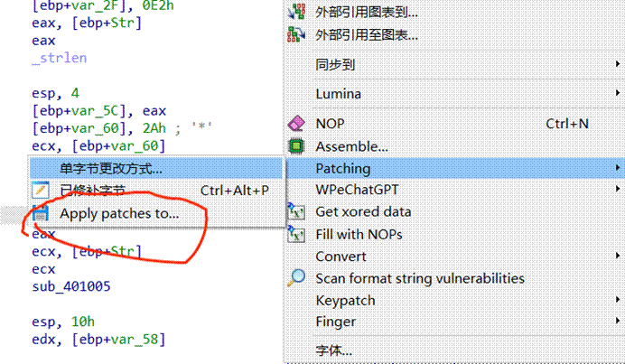
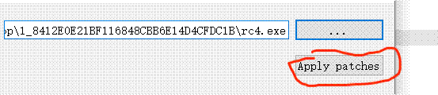
好了，准备工作完成，开始调试。
（5）调试
选这个调试器：
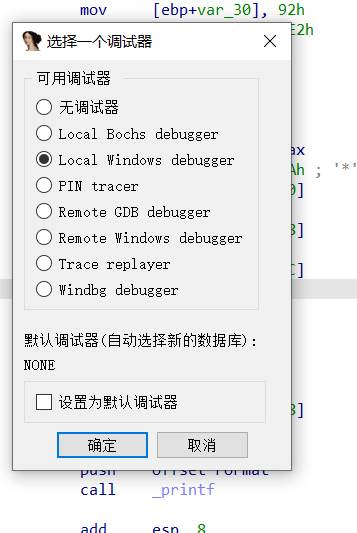
运行后 F8 单步，观察运行窗口，出现结果：
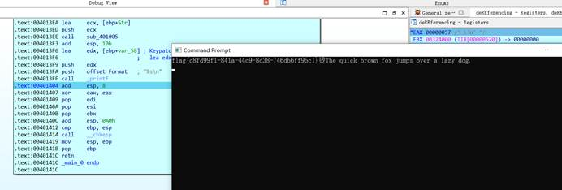
方法二：直接动调
由于这个题有缺陷，才诞生的这个方法（不适用别的题）。其实还有几个方法，但不细讲。面对 RC4，逆向有逆向的做法，pwn 有 pwn 的做法，密码有密码的做法。Ok，进入正题。
注意：方法一的文件已经不适合用方法 2 了，因为方法一已经把文件损坏了。方法二需要使用原始文件。
（1）下断点，直接动调
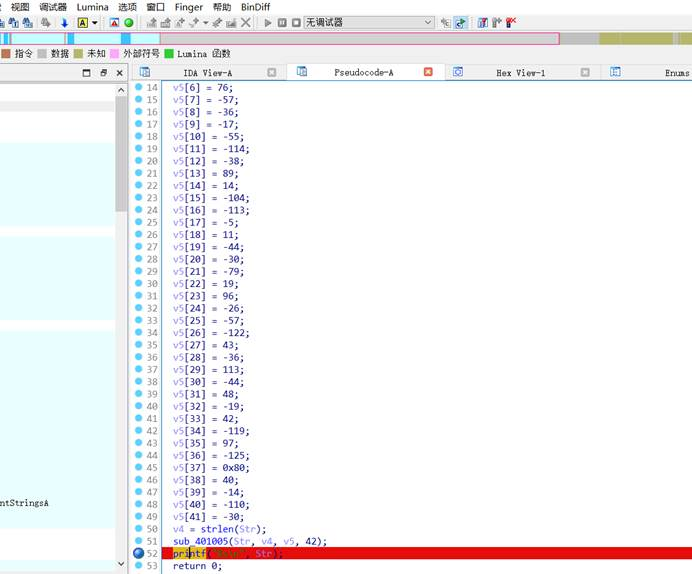
（2）动调
直接看堆栈窗口出结果，秒了。
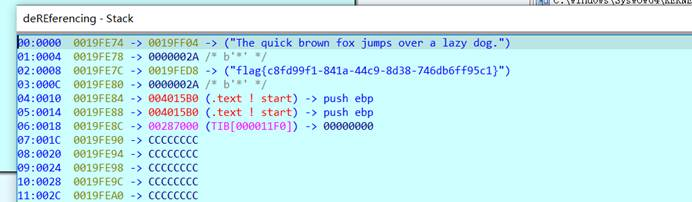